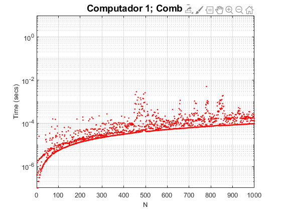

f1 ='bubble.csv';
f2 = 'heap.csv';
f3 = 'insertion.csv';
f4 = 'merge.csv';
f5 = 'quick.csv';
f6 = 'rank.csv';
f7 = 'selection.csv';
f8 = 'shaker.csv';
f9 = 'shell.csv';
f10 = 'comb.csv';
bubble = readmatrix(f1);
heap = readmatrix(f2);
insertion = readmatrix(f3);
merge = readmatrix(f4);
quick = readmatrix(f5);
rank = readmatrix(f6);
selection = readmatrix(f7);
shaker = readmatrix(f8);
shell = readmatrix(f9);
comb = readmatrix(f10);
x = [1:1:1000];
bubbleb = bubble(:,3);
bubblew = bubble(:,2);
heapb = heap(:,3);
heapw = heap(:,2);
insertionb = insertion(:,3);
insertionw = insertion(:,2);
mergeb = merge(:,3);
mergew = merge(:,2);
quickb = quick(:,3);
quickw = quick(:,2);
rankb = rank(:,3);
rankw = rank(:,2);
selectionb = selection(:,3);
selectionw = selection(:,2);
shakerb = shaker(:,3);
shakerw = shaker(:,2);
shellb = shell(:,3);
shellw = shell(:,2);
combb = comb(:,3);
combw = comb(:,2);
semilogy(x,combb,'.r')
hold on
semilogy(x,combw,'.r')
grid on
ylim([10^-7 10])
title ('Computador 1; Comb Sort', 'FontSize',14)
xlabel ('N', 'FontSize',10)
ylabel ('Time (secs)', 'FontSize',10)
